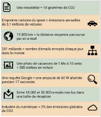

Eh non :(
Raté, regarde : Selon l'organisation Carbon Literacy Project, un e-mail standard génère environ 4 g de CO2 ; avec une pièce jointe volumineuse, il produit jusqu'à 50 g de CO2. Envoyer une photo de vacances de 1 Mo à dix amis équivaut ainsi à parcourir 500 mètres en voiture. Car, même adressé à un collègue à quelques mètres de distance, votre e-mail envoie des données vers les datacenters de Google ou de Yahoo qui sont situés aux États-Unis. Il parcourt donc des milliers de kilomètres en transitant par des dizaines de routeurs, serveurs et autres ordinateurs qui consomment, eux aussi, de l'énergie pour fonctionner et qui nécessitent d'être refroidis.
Les courriels continuent à dépenser de l'énergie pour leur stockage. « Chaque Français garde entre 10.000 et 50.000 mails non lus dans sa boîte de réception », assure Edouard Nattée, le P.-D.G. de la startup Foxintelligence, qui édite notamment, Cleanfox, l'application de tri automatique d'e-mails. Toutes ces données sont stockées dans des datacenters, qui consomment annuellement 200 TWh par an et produisent 0,3 % des gaz à effet de serre, selon le site Nature.
